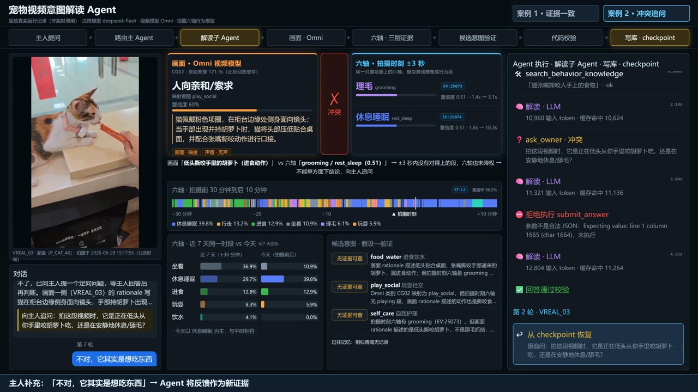
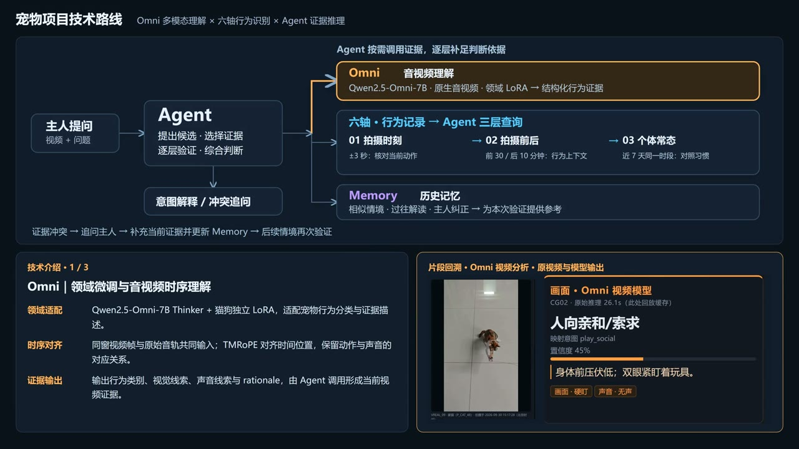
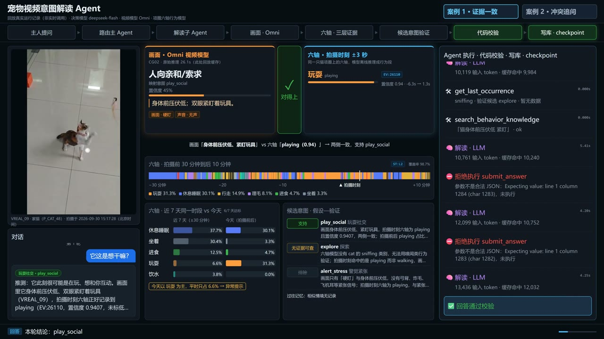

为什么做这个
养宠物的人常常看不懂它想要什么。同一个动作，放在不同时间意思也不一样：早上蹲在门口，多半是要上厕所；下午蹲在门口，可能只是想出去玩。
只看一段十几秒的视频，看不到这些前因后果。但宠物戴的项圈一直在记录它的行为。所以我让 Agent 把两样东西放在一起看：视频里它此刻在做什么，项圈记录里它刚才做了什么、平时这个时间一般在做什么。
项圈
六轴传感器每秒 25 次采样
→
行为识别模型实时识别，端侧版仅 21.6 KB
→
行为记录几点到几点在做什么
视频
主人拍的视频画面 + 声音
→
音视频模型Qwen2.5-Omni 微调
→
看到了什么、听到了什么情绪状态 + 判断依据
判断
意图 Agent对照两边的证据
→
对得上回答，并注明依据
→
对不上先问主人，再判断
几个有意思的地方

两边说法打架时，不硬猜，先问一句
演示里视频判断猫在“亲近 / 索要”，项圈却记录它在舔毛、休息。Agent 没有挑一个答案，而是先查前后几秒的记录，还是分不清，就问主人一个能区分两种说法的问题。
主人第二天才回也没关系：对话状态存了下来，回复后从原地接着推理。
全部视频模型单独判错的测试案例，都变成了先追问
确认模型真的在“听”声音
模型答对了，不代表它用上了声音。我把同一段视频的音轨换成静音、再换成别的视频的声音，其他条件都不变，看判断会不会跟着变。结果确认它确实在用声音的内容。
这个实验还抓到一个毛病：音轨明明是静音，模型却说“听到了叫声”，其实是看画面猜的。后来专门造了一批“画面像在叫、实际没声音”的样本去训练，把这个问题修掉了。
12 → 1静音下仍“听到”叫声的猫视频（64 条中）
把项圈记录变成 Agent 查得动的证据
项圈每秒给一个判断，直接拼起来会碎成一万多段，平均每段只有几秒。我直接复用了线上 App 用的那套合并逻辑，把它整理成一段段有起止时间的行为，再按“拍摄那一刻 / 前后半小时 / 近 7 天同一时段”三种尺度给 Agent 查询。
17,273 → 3,576段，和 App 上显示的是同一个结果更多实现细节（模型选型、训练、评测方法）欢迎面聊：muzibu77@gmail.com